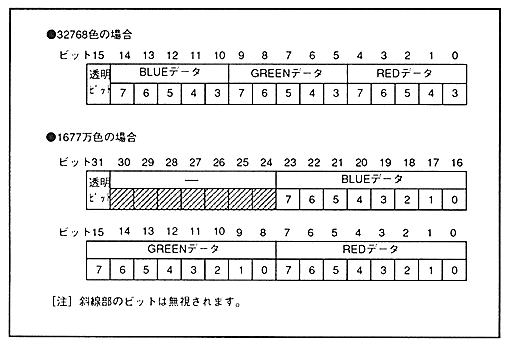

Table 4.3 Transparent dot data values
Color Format | Character Colors | bits per dot | transparency code |
Palette format | 16 colors | 4 bits / Dot | 0H (4 bits) |
256 colors | 8 bits / dot | 00H (8 Bit) | |
2048 colors | 16 bits / dot | 000H (lower 11 bits) | |
RGB format | 32768 colors | 16 bits / Dot | MSB (bit 15) is 0 |
16.77 million colors | 32 bits / dot | MSB ( (Bit 31) is 0 |
Figure 4.6 RGB dot data
